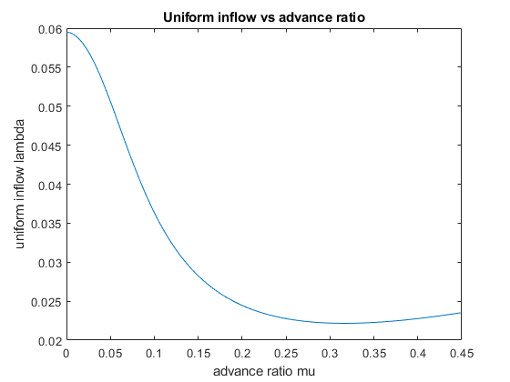
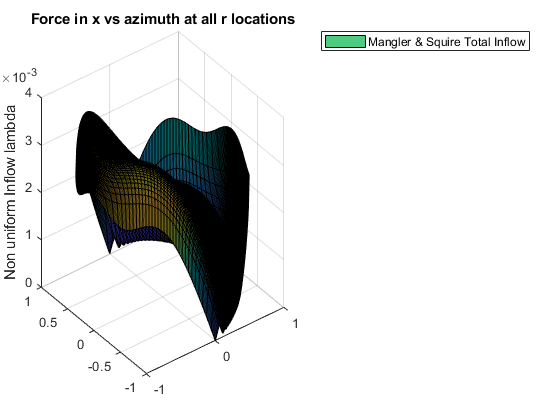
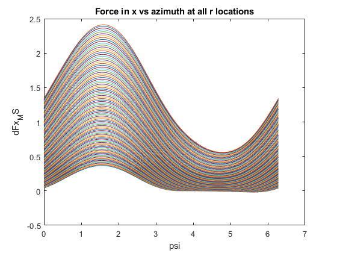
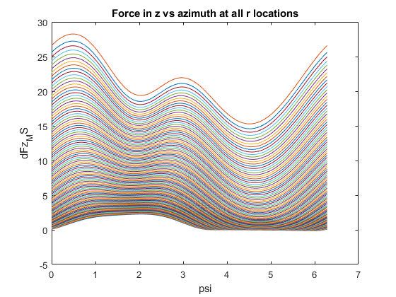
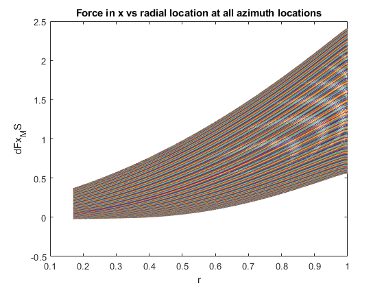
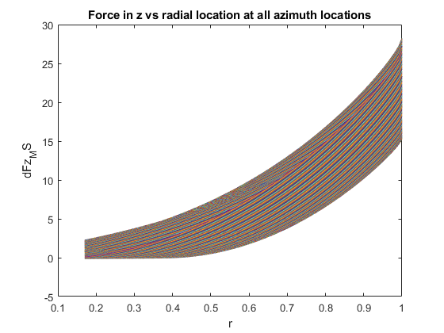
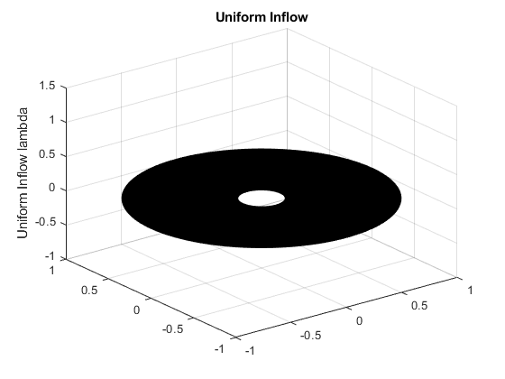

Contents
clc
close
clear
UH 60
Nb = 4;
N_psi = 360;
R_i = 26.85;
a = 2*pi;
omega_i = 258;
A_i = 2261.5;
A_blade_i = 186.8;
cd0 = 0.01;
f_i = 35.04;
T_i = 20000;
c_i = 20.76;
rho = 1.225;
k = 1.15;
L_tr = 45;
x_cg = 0;
y_cg = 0;
h = 5;
vb = 1;
lock = 8;
theta_tw = 0;
R = R_i*0.3048;
A = A_i*0.092903;
A_blade = A_blade_i*0.092903;
f = f_i*0.092903;
v_inf_mph = 0:1:222;
v_inf = v_inf_mph*0.44704;
c = c_i*0.0254;
sigma = (Nb*c)/(pi*R);
omega = (omega_i/60)*2*pi;
v_tip = omega*R;
alpha_d = -2;
alpha = -2*pi/180 * ones(1, 223);
mu = v_inf.*cos(alpha)/(omega*R);
T = T_i*4.4482216153;
CT_constant_T = (T/(rho*A*v_tip^2)) * ones(1, 223);
lambda_hover = sqrt(CT_constant_T/2);
psi = (0:1:360)*pi/180;
e = 0.17;
r = linspace(e, 1, 100);
Cl_alpha = a;
nu = sqrt(1-r.^2);
dr = (1-(e))/99;
linear_inflow_power = 0.01;
MS_inflow_power = 0.01;
w = 0.3;
functions
[lambda_TPP_UH60_FF,lambda_i_TPP_UH60_FF,lambda_output] = find_linear_inflow(mu, alpha, CT_constant_T);
[trim_inflow, CH_TPP_UH60_FF, CY_TPP_UH60_FF, beta, beta_dot, beta_star, theta, theta_dot, theta_star] = find_trim_inflow(mu, psi, CT_constant_T, sigma, f, A,L_tr, R, vb, linear_inflow_power, theta_tw,lambda_TPP_UH60_FF, omega, x_cg, y_cg, h, T, lock, a, cd0);
[cn_1] = find_MS_1_inflow(mu(174), psi, nu, alpha, CT_constant_T);
[cn_3] = find_MS_3_inflow(mu(174), psi, nu, alpha, CT_constant_T);
[w,lambda_MS_total] = find_MS_real_inflow(cn_1, cn_3, w, psi,nu, CT_constant_T, mu(174));
[u_t, u_p_linear, u_p_MS, T_linear_bar, Q_linear_bar, T_MS_bar, Q_MS_bar,P_linear_bar, P_MS_bar] = ...
find_bemt(r, psi, mu(174), beta(:,174), beta_star(:,174),v_inf, lambda_TPP_UH60_FF(174),...
Cl_alpha,lambda_MS_total, theta(:,174), rho, c, R, cd0, N_psi, dr, Nb, omega, v_tip);
epsilon_t_linear_it = 1;
epsilon_p_linear_it = 1;
while (epsilon_t_linear_it > 0.004) && (epsilon_p_linear_it > 0.004)
T = T_linear_bar;
linear_inflow_power = P_linear_bar;
CT_constant_T = (T./(rho*A*v_tip^2)) * ones(1, 223);
[lambda_TPP_linear_it,lambda_i_linear_it,lambda_output_linear_it] ...
= find_linear_inflow(mu, alpha, CT_constant_T);
[trim_inflow_linear_it, CH_TPP_UH60_FF_linear_it,...
CY_TPP_UH60_FF_linear_it, beta_linear_it, beta_dot_linear_it, ...
beta_star_linear_it, theta_linear_it, theta_dot_linear_it, ...
theta_star_linear_it] = find_trim_inflow(mu, psi, CT_constant_T,...
sigma, f, A,L_tr, R, vb, linear_inflow_power, theta_tw,...
lambda_TPP_linear_it, omega, x_cg, y_cg, h, T, lock, a, cd0);
[u_t_linear_it, u_p_linear_linear_it, u_p_MS_linear_it, ...
T_linear_bar_linear_it, Q_linear_bar_linear_it, T_MS_bar_linear_it,...
Q_MS_bar_linear_it,P_linear_bar, P_MS_bar_linear_it, alpha_linear,alpha_MS] = ...
find_bemt(r, psi, mu(174), beta_linear_it(:,174), beta_star_linear_it(:,174),v_inf, ...
lambda_TPP_linear_it(174),Cl_alpha,lambda_MS_total, theta(:,174),...
rho, c, R, cd0, N_psi, dr, Nb, omega, v_tip);
epsilon_t_linear_it = abs(T_linear_bar - T);
epsilon_p_linear_it = abs(P_linear_bar - linear_inflow_power);
end
epsilon_t_MS_it = 1;
epsilon_p_MS_it = 1;
while (epsilon_t_MS_it > 0.004) && (epsilon_p_MS_it > 0.004)
T = T_MS_bar;
MS_inflow_power = P_MS_bar;
CT_constant_T = (T./(rho*A*v_tip^2)) * ones(1, 223);
[lambda_TPP_MS_it,lambda_i_TPP_MS_it,lambda_output] = ...
find_linear_inflow(mu, alpha, CT_constant_T);
[trim_inflow_MS_it, CH_TPP_UH60_FF_MS_it, CY_TPP_UH60_FF_MS_it, beta_MS_it,...
beta_dot_MS_it, beta_star_MS_it, theta_MS_it,...
theta_dot_MS_it, theta_star_MS_it] = find_trim_inflow(mu, psi, CT_constant_T, sigma,...
f, A,L_tr, R, vb, MS_inflow_power, theta_tw,lambda_TPP_MS_it, omega,...
x_cg, y_cg, h, T, lock, a, cd0);
[cn_1] = find_MS_1_inflow(mu(174), psi, nu, alpha, CT_constant_T);
[cn_3] = find_MS_3_inflow(mu(174), psi, nu, alpha, CT_constant_T);
[w,lambda_MS_total] = find_MS_real_inflow(cn_1, cn_3, w, psi,nu, CT_constant_T, mu(174));
[u_t, u_p_linear, u_p_MS, T_linear_bar, Q_linear_bar, T_MS_bar,...
Q_MS_bar, P_linear_bar, P_MS_bar, dL_MS, alpha_linear,alpha_MS, dFx_MS, dFz_MS]...
= find_bemt(r, psi, mu(174), beta_MS_it(:,174), ...
beta_star_MS_it(:,174),v_inf, lambda_TPP_MS_it(174),...
Cl_alpha,lambda_MS_total, theta_MS_it(:,174), rho, c,...
R, cd0, N_psi, dr, Nb, omega, v_tip);
epsilon_t_MS_it = T_MS_bar - T;
epsilon_p_MS_it = P_MS_bar - MS_inflow_power;
end
disp("Thrust Linear")
disp(T_linear_bar)
disp("Thrust Mangler Squire")
disp(T_MS_bar_linear_it)
disp("Power Linear")
disp(P_linear_bar)
disp("Power Mangler Squire")
disp(P_MS_bar_linear_it)
hold on
figure (1)
plot (mu, lambda_TPP_UH60_FF)
figure (2)
[r_grid psi_grid] = meshgrid(r,psi);
surf(r_grid.*cos(psi_grid), r_grid.*sin(psi_grid), abs(lambda_MS_total));
title("Force in x vs azimuth at all r locations")
zlabel("Non uniform Inflow lambda")
legend("Mangler & Squire Total Inflow")
figure(3)
plot(psi, dFx_MS)
title("Force in x vs azimuth at all r locations")
xlabel("psi")
ylabel("dFx_MS")
figure(4)
plot(psi, dFz_MS)
title("Force in z vs azimuth at all r locations")
xlabel("psi")
ylabel("dFz_MS")
figure(5)
plot(r, dFx_MS')
title("Force in x vs radial location at all azimuth locations")
xlabel("r")
ylabel("dFx_MS")
figure(6)
plot(r, dFz_MS')
title("Force in z vs radial location at all azimuth locations")
xlabel("r")
ylabel("dFz_MS")
figure(7)
uniform_crt = ones(361, 100);
surf(r_grid.*cos(psi_grid), r_grid.*sin(psi_grid), uniform_crt*lambda_TPP_UH60_FF(174))
Thrust Linear
856.9096
Thrust Mangler Squire
1.1240e+04
Power Linear
4.2059e+04
Power Mangler Squire
7.0532e+04
Warning: Imaginary parts of complex X and/or Y arguments ignored.
Warning: Imaginary parts of complex X and/or Y arguments ignored.
Warning: Imaginary parts of complex X and/or Y arguments ignored.
Warning: Imaginary parts of complex X and/or Y arguments ignored.
      